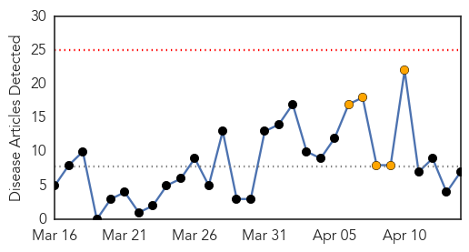
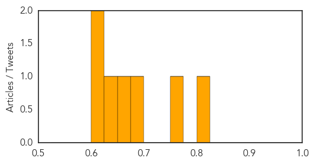
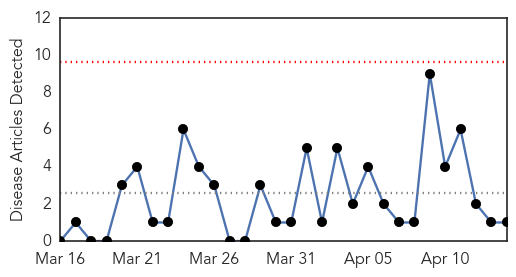
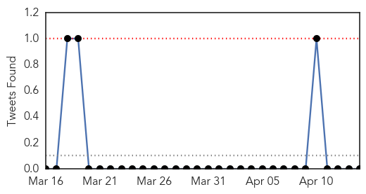

Measles
30-Day Web Trend
0 alerts, 5 warnings

30-Day Twitter Trend
0 alerts, 0 warnings

Article Locations

Article Confidences
Top Articles:
- 0.815
- More measles cases confirmed at Calgary schools
- 0.760
- Measles confirmed at two more Calgary schools
- 0.686
- Editorial: Vaccine opt-outs risky
- 0.655
- 2 Calgary students with measles recently visited Philippines
- 0.638
- Small Measles Outbreak In New York City Traced To Vaccinated Patient
- 0.602
- Anti-vaccine message from some naturopaths raises concerns
- 0.602
- Anti-vaccine message from some naturopaths raises concerns
Top Tweets:
-
No tweets found for Apr 14, 2014
Cholera
30-Day Web Trend
0 alerts, 0 warnings

30-Day Twitter Trend
0 alerts, 0 warnings

Article Locations

Article Confidences

Top Articles:
Top Tweets:
-
No tweets found for Apr 14, 2014